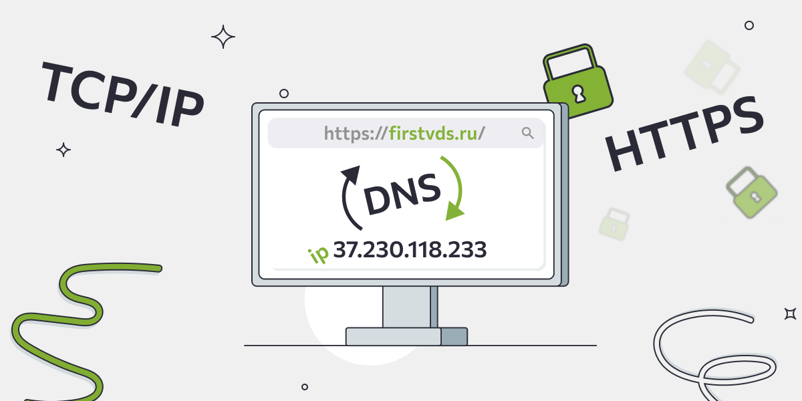

История развития сети Интернет
Принципы, по которым строится Интернет, впервые были применены в сети ARPANET, созданной в 1969 году по заказу американского агентства DARPA. Используя наработки ARPANET, в 1984 году Национальный научный фонд США создал сеть NSFNET для связи между университетами и вычислительными центрами. С передачей опорной сети NSFNET в коммерческое использование появился современный Интернет. В 1989 году в Европе, в стенах Европейского совета по ядерным исследованиям (ЦЕРН) родилась концепция Всемирной паутины(World Wide Web). Её предложил знаменитый британский учёный Тим Бернерс-Ли. Он же в течение двух лет разработал протокол HTTP, язык HTML и идентификаторы URI. В 1991 году Всемирная паутина стала общедоступна в интернете, а в 1993 году появился знаменитый веб-браузер NCSA Mosaic. Всемирная паутина набирала популярность. В 1994 году был образован Консорциум Всемирной паутины (W3C). Можно сказать, что Всемирная паутина преобразила интернет и создала его современный облик.
Сетевые протоколы
Протокол передачи данных - это набор соглашений, которые определяют обмен данными между различными программами. Любая связь между устройствами возможна лишь благодаря протоколам. Они делятся на физические протоколы (регулируют то, как именно и какие сигналы будут идти от одного устройства к другому) и логические протоколы, которые отвечают за смысл и передачу данных, когда связь уже установлена. Так, браузер на компьютере связывается с сервером по протоколу HTTP или HTTPS. По интернету можно передавать файлы благодаря FTP-протоколу, а протокол BitTorrent позволяет потоково скачивать данные. Сетевой протокол - набор правил и действий (очерёдности действий), позволяющий осуществлять соединение и обмен данными между двумя и более включёнными в сеть устройствами. Наиболее известный сетевой протокол - это HTTP (Hyper Text Transfer Protocol) — это протокол передачи гипертекста. Протокол HTTP используется при пересылке Web-страниц между компьютерами, подключенными к одной сети. Существует его модификация, HTTPS, здесь S(англ. Security) показывает безопасное подключение и передача гипертектса.
